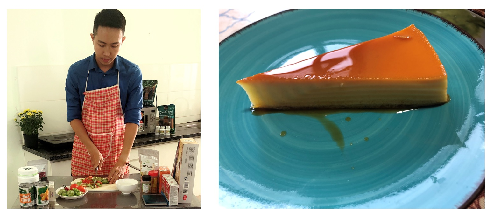
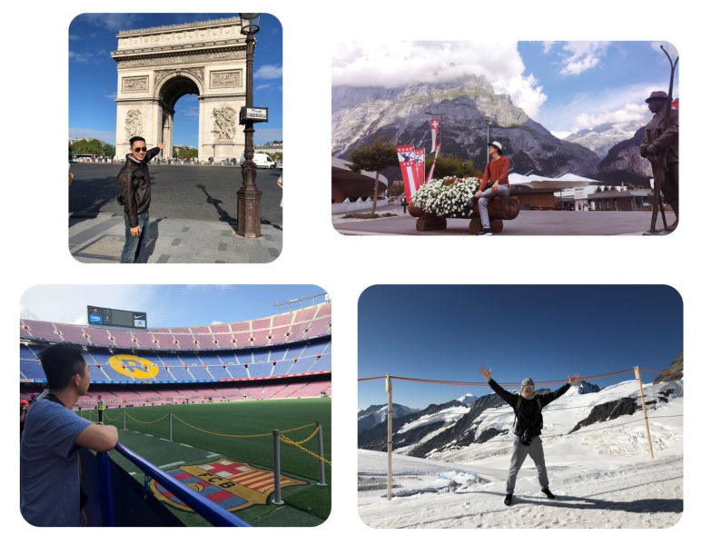

About
Career Objectives
My name is ***. I am a Machine Learning Research Intern at Skim AI Technologies, where I applies latest research in Deep Learning NLP to make machines understand human languages better. Projects I am working on include Sentiment Analysis, Language Generation and Document Summarization. My research interests are in transfer learning, where deep neural networks which were pretrained on large corpora to âunderstandâ our languagues can be fine-tuned for different tasks on much smaller datasets to receive near state-of-the-art results.
I am pursuing a masterâs degree in Business Analytics at the University of Rochester, where I receive solid training in Statistics, Machine Learning and Programming. I am proficient in Python and R programming languages, data retrieval and processing with SQL, data visualization with Tableau, Matplotlib and Seaborn. I am interested in working with large datasets, including cleaning, connecting and mining data. I have completed several Data Science projects and Kaggle competitions, where I built, tuned and ensembled machine learning models including Regresisons (Ridge, Lasso), Random Forest, SVM, XGBoost and LightGBM. More details about these projects can be found below:
When not working on my projects or studying, I like to read AI and Machine Learning blogs. I am learning so much from the AI community, where knowledge is shared to challenge the boundary of computer intelligence. I also like to read research papers and write codes to reproduce research findings. In my free time, I write tutorials and blogs to discuss topics in Data Science, Machine Learning and NLP.
My Life Beyond Finance
Baking
Baking embodies my core values: an embrace of art and science. It is only when baking that I can observe the physical and chemical transformations of color, texture, and form, imparting a sense of creation. Baking represents my embrace of sharing; sharing my creations with friends and relatives have become just as fulfilling as the act of baking itself.
 Caramel flan made by me
Traveling The World
I love to experience the richness of life and culture across countries and continents. It inspires me to commit to make the world a better place by asking more of business.
 My trip around the world